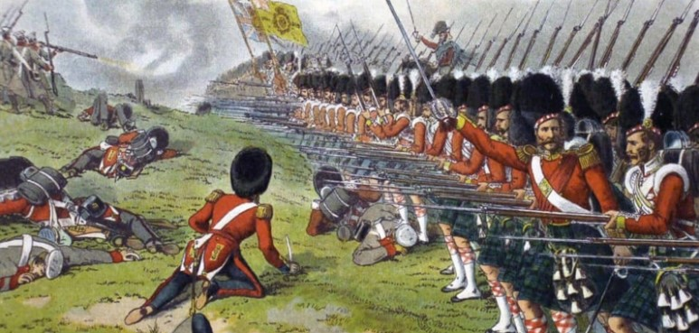
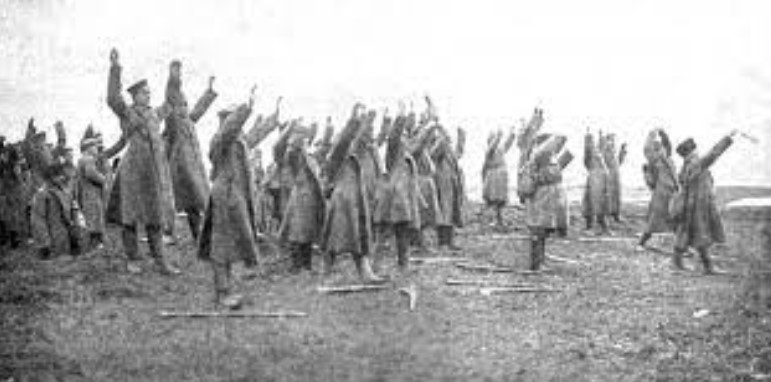

Timeline
Introduction
The Great War lasted for 4 years from 1914-1918. This webpage will help show you the most important order of events from the start of the war to the end.
Timeline
Pre-War
From https://en.wikipedia.org/wiki/File:Europe_1914_%28pre-WW1%29,_coloured_and_labelled.svg

From https://www.nps.gov/places/the-crimean-war.htm
From https://theconversation.com/air-pollution-in-victorian-era-britain-its-effects-on-health-now-revealed-87208
Before WW1 the world was still similar to the Victorian era. Europe had a number of "Great Powers"
that balanced each other out. The balance was known as the Concert of Europe, and as a result, the continent was at relative peace for a
century and did not have any major wars between multiple Great Powers against each other, with the exception of the
Crimean War
back in 1853. The last time when the entire continent was at war was back in 1815, with the Napoleonic wars.
The Victorian era was marked by massive technological growth and social reforms. Liberalism and the limiting of the power of monarchs was
widespread. The world became industrialized with factories and railroads. Weapons were revolutionized as firepower became many times stronger
than the pre-Victorian world. Muskets that could miss the side of a barn and took half a minute to reload transitioned to dead accurate rifles
that could be fired twice a second. Artillery were loaded with heavy explosives instead of being solid cannon balls. Machine guns became
widespread. European Great Powers rapidly expanded and became giants, holding colonies all across North America, South America, Asia, and
Africa.
With the years of peace and the constant balancing of Great Powers, Europe started to polarize into alliances.
There was the Triple Alliance, between Germany, Italy, and Austria-Hungary. Then, there was the Triple Entente, formed by France, Britain, and
Russia which was made to be a counterbalance to the Triple Alliance.
This delicate peace created by the balance known as the Concert of Europe, however, would soon be broken....
Outbreak of the War
From https://en.wikipedia.org/wiki/Assassination_of_Archduke_Franz_Ferdinand#/media/File:DC-1914-27-d-Sarajevo-cropped.jpg
Decades of no war means decades of unsolved grudges. Many countries in Europe have had ambitions and diplomatic conflicts with each other.
The balance of power only made war too risky for the Great Powers to conduct, not prevent conflict altogether by some diplomatic magic.
The Great Powers also had tensions in their colonies as all of the colonizable locations were colonized. The tech boom of the Victorian era
also caused an arms race between the Great Powers, further increasing tensions.
On 12th of July, 1914, Archduke Franz Ferdinand, the heir to the Austro-Hungarian throne was assasinated by Bosnian nationalists. The
Austro-Hungarians believed that the Serbian government was involved in the assasination and declared war. Russia had interests in the balkan
nations and wanted to deter Austro-Hungarian expansion to the balkans. As a result, Russia declared war on Austria-Hungary in order to
protect Serbia.
The German Empire was bound to an alliance with Austria-Hungary. The Germans honoured their alliance and was called into the war against
Russia. The Russians then called France to war due to their alliance and with that, the First World War starts.
1914
From https://en.wikipedia.org/wiki/First_Battle_of_the_Marne#/media/File:German_soldiers_Battle_of_Marne_WWI.jpg

From https://www.britannica.com/event/Schlieffen-Plan

From https://www.cheshireroll.co.uk/thegreatwarbattle/battleoftannenberg
In 1914, the Great War begins and Germany implements the Schlieffen plan. The Schlieffen plan calls for Germany to
bring the majority of its army to the western front and leave only a small detachment to guard against Russia. Some of the western troops
would then defend Alsasce-Lorraine (territory captured from the French in a previous war). The majority of the troops would then invade
Belgium, a neutral country, to avoid heavy fortifications and the French main force near the border. The troops would then head south and rapidly capture Paris. The Germans knew that Russia was massive and had poor infrastructure, meaning that complete mobilization would take a
long time, so the small German defensive force would hold. When Paris gets captured, the French would be knocked out of the war. The Germans
could then concentrate their full force on Russia and defeat them.
However, the German high command slightly modified their original plan after they received new General Staff. The new leader was scared of the
Russian behemoth and weakened the force in France and stationed more troops in the east. As war broke out, the elite German army immediately
executed their plan. They quickly overwhelmed Belgian forces and rapidly invaded French territory. The violation of Belgian neutrality brought
Great Britain into the war, who was already eager to contain German expansion. The French main forces meanwhile were attacking
Alsasce-Lorraine (on the French-German border) in an effort to reclaim it.
Meanwhile in the east, the Russians caught the Germans by surprise by mobilizing their army 3 days before declaration of war. However, the
Russian military was of poor quality and was decisively defeated at the Battle of Tannenberg. The Ottoman
Empire conducts a surprise attack on Russian ports in the Black Sea and joins the Central Powers. In the west,
the Germans almost reached Paris and it appeared that the French would get knocked out. However, the Miracle
on the Marne happened and the Germans were pushed back. The British and the French initiated their own counterattack but suffered heavy
casualties for little gain in the Battle of the Aisne. Both sides
eventually dug trench systems so powerful that neither side could win on the offense and the stalemate of Trench Warfare began.
1915
From https://www.britannica.com/event/Gallipoli-Campaign
From https://www.britannica.com/event/Second-Battle-of-Ypres
As the trench warfare in the western front caused a stalemate, the British and French decided to open a second front in the Ottoman Empire.
They wanted to supply Russia by sea, in which the only way to do so was to sail through Istanbul, the Ottoman capital. However, their attempts
have failed as the Ottomans had heavy coastal fortresses guarding the narrow Dardanelles strait as well as sea mines. As a result, the
British and French launched the Gallipoli campaign to capture the Gallipoli peninsula in order to
capture Istanbul by land. However, they failed and suffered heavy casualties.
At the same time, the Ottomans unfortunately decided to commit genocide against the
Armenians. In 1915, the Ottomans murdered hundreds of thousands of Armenian civilians.
1915 was also the year that first saw use of poison gas. The Germans deployed poison gas for the first time in the
Second Battle of Ypres. The intial gas attack lowered Entente morale
significantly and inflicted heavy casualties. However, many of the Entente troops improvised gas masks using cloth drenched in their own urine.
They were heavily resilient and were able to inflict heavy casualties upon the Germans conducting an offensive after the gas attack. The Germans
gained little land for a heavy cost, once again showing the deadlock of trench warfare.
In 1915, Italy betrayed Germany and Austria-Hungary. Italy was allied with the Central Powers as they were all part of the Triple Alliance,
but the Triple Alliance was only a defensive alliance. The Austro-Hungarian invasion of Serbia was an act of aggression and thus not a defensive
war. The Italians decided to join the Entente after the Entente offered them land held by Austria-Hungary.
In the east against Russia, the Central Powers made significant gains against the Russian Empire. They were able to decisively defeat Russia
again in the Gorlice–Tarnów offensive. This
battle and other major losses caused Russian troops to conduct the Great Retreat.
The Russians rapidly retreated deep into Russian territory in order to reorganize their army and prevent their troops in a massive bulge/
salient being encircled.
1916
From https://study.com/academy/lesson/battle-verdun-history-importance.html

From https://www.history.com/topics/world-war-i/battle-of-the-somme
From https://www.britannica.com/event/Battle-of-Jutland
1916 was the year with the largest battles. By now, the Germans have realized that on the western front, decisive attacks are not possible with
trench warfare. Instead they switched to an attrition warfare strategy, in which they would use combat to deplete the Entente from resources
and manpower.
With that, the Germans assaulted French positions near Verdun. The Battle of Verdun was the longest battle
of WW1 and also one of the largest. The Germans constantly assaulted and shelled Verdun in hopes of drawing French troops there and depleting
France's manpower. A joint force of mostly British troops then attacked German positions near the Somme river in the
Battle of the Somme in order to relieve pressure from Verdun. The Battle of the Somme is also one of the deadliest and largest battles of WW1 with around 3.5 million troops total taking part. The Battle of the Somme introduced the
debut of the tank, which saw limited success in its first run.
The French forces requested support from Russia to divert German troops from Verdun and so, in the eastern front, the
Brusilov offensive took place. The
Brusilov offensive was one of the most brutal offensives in WW1, with around a million troops dying on each side. The Russians decided to
launch a suprise attack that did not allow the Germans and Austrians to react in time. They launched a brief high intensity artillery strike
followed by a massive offensive across the entire front, preventing Austria-Hungary and Germany from blockading the assault. This diverted
troops from the western front, but at a huge cost for Russia.
In 1916, the largest naval battle of WW1, known as the Battle of Jutland
took place. It was the last major naval battle that was fought by mainly battleships. The British had been imposing a massive blockade on
Germany, preventing Germany from getting vital resources outside of Europe. In order to break the blockade, the Germans launched a massive
naval attack. The battle resulted in both sides claiming victory. The blockade was not broken, but the British had far
more casualties than the Germans. The Germans were much better organized and co-ordinated, but were unable to match the sheer size and might
of the British royal navy.
1917
From https://cdn.britannica.com/01/200901-050-BE42F690/Mark-IV-British-tank-trench-German-Battle-November-20-1917.jpg
From https://en.wikipedia.org/wiki/Battle_of_Passchendaele#/media/File:Chateauwood.jpg
In 1917 parts of the French army was in mutiny. The French military command promised that France would win an easy decisive victory at the
Second Battle of the Aisne. However, that did not happen and
the army's morale was in tatters. Meanwhile, the British were beginning to run out of supplies.
Luckily for the Entente... America comes and saves
the day!.
After the Germans sent the
Zimmermann Telegram telling Mexico to invade the USA, British intellegence quickly intercepted it and notified the USA. The American
government shortly declared war on Germany. The American intervention in the war heavily boosted Entente morale and allowed for tons of
valuable supplies and weapons to be recieved by France and Britain. The Americans mobilized 3-4 million troops for WW1. However, the Atlantic
Ocean was big and it was impossible for a nation the size of America to mobilize instantly.
Meanwhile two major battles happened in the western front. The first was the
Battle of Passchendaele/Third Battle of Ypres. It was a massive British offensive on the town of Ypres in order to capture bases
for German u-boats (submarines). Heavy rain and heavy artillery barrages caused the terrain to turn into a swamp full of mud. The British
forces were able to capture some of the targets but suffered heavy casualties. The second major battle was the
Battle of Cambrai. The goal of the offensive was to break through
the Hindenburg line, a huge series of defences. The British heavily utilized tanks in this battle and it was the largest tank battle in the
entire war. Although the British were unsuccessful in breaching the Hindenburg line, they were able to learn valuable lessons critical for
success later.
In the eastern front, the Russian Empire broke into a massive revolution known as the
Russian Revolution.
Russia was in no position to fight and was loosing against the Russian communists.
1918
The Russian communists soon after took control over parts of Russia and signed
The Treaty of Brest-Litovsk which meant that Russia had surrendered and
exited the First World War. Russia ceded land in the Baltics, parts of Belarus, all of Ukraine, and more territory. The surrender of Russia
allowed Germany to move dozens of divisions of men to the western front where men were needed.
The Germans knew that American soldiers were going to land in France soon and by then the war would be over. Germany had one chance left.
Germany could muster all of its troops and make a last desperate super offensive for Paris, similar to that of the Schlieffen plan. This
operation was known as the Kaiserschalcht/German Spring Offensive.
France and Britain knew they could not stop the full force of the German juggernaut, now that Russia was gone, without American support.
The Entente decided to heavily defend strategically important and easy to defend areas. As a result, the Kaiserschalcht recaptured lots of land
lost from 1915-1917 and captured new land, but only barren wastelands that were hard to defend.
Soon after, once again the Germans were 40km away from Paris. If the Kaiserschalcht was to be successful, they'd capture Paris and knock France
out of the war. However, once again, the Miracle on the Marne happened.
The Germans were pushed back by French, British, and newly arrived American troops.
With the failure of the Kaiserschalcht, Germany's defeat was certain. Germany ran out of troops, resources, and manpower. Soon later, the
Entente launched the Hundred Days Offensive and retook all of German
occupied territory. With that.... Germany and the Central Powers finally surrendered.